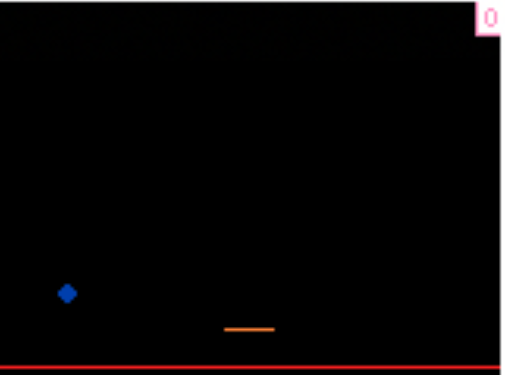

Simple catch game - low development process. First game created not following a tutorial and happy with.

Catch was a super simple game created using block code on Arcade.Makecode.com. It was the first real game I created without tutorials and I was genuinly really pleased about it. It was enjoyable although its been lost as the saving system on the website needs work. However it was a good memory to keep.